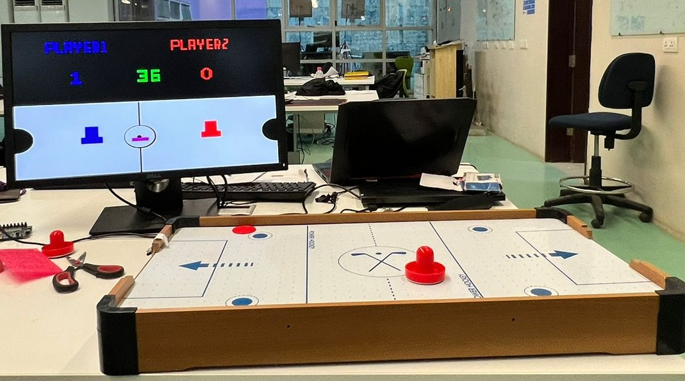
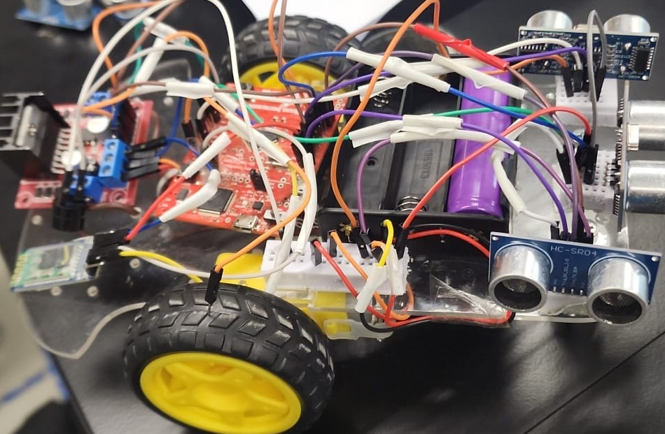
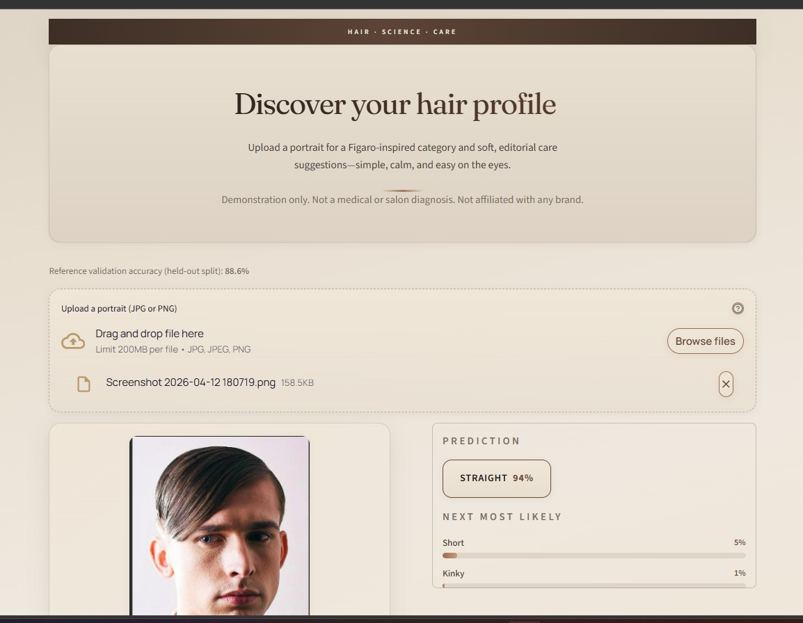
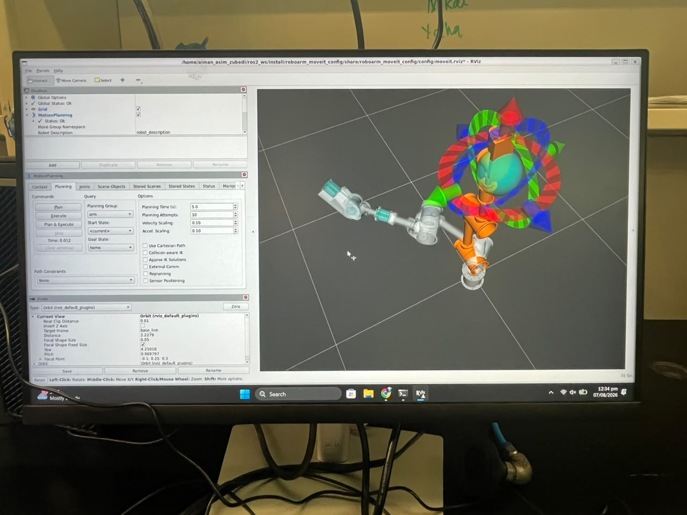

Designed and implemented an Air Hockey system using Verilog and infrared sensors to detect goals and track gameplay. I used bitmapping to display the score on the PC screen every time a goal was detected.

I built an autonomous robot using a Tiva C microcontroller, ultrasonic sensors, and an L298N motor driver. The robot detects walls and adjusts its movement to maintain a fixed distance.

In this project, I used an LLM that could predict the hair type of a person simply by uploading a snapshot of their hair. The model was trained on the Figaro-1k dataset, which contains images of hair with different types and textures. Our prediction system was able to classify hair type with an accuracy of 85% on the test set. Along with that, we also built a recommendation system that could suggest hair care products based on the predicted hair type.

We worked on a robotic arm end-effector system for automated sticker picking and placement using suction-based gripping and custom tray mechanisms.